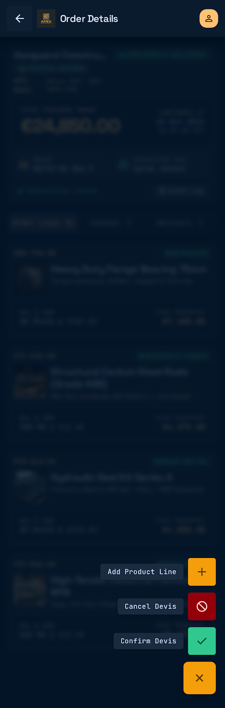
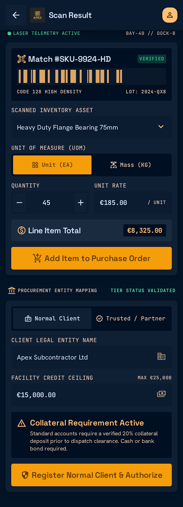
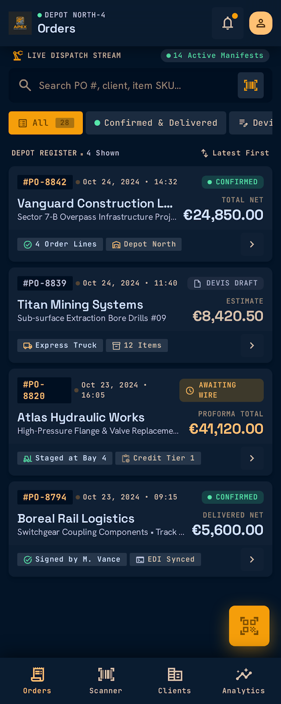

ERP integration
Connected the mobile experience to Odoo ERP for synchronized product, customer, inventory, and sales data.
CASE STUDY · PROFESSIONAL PROJECT
A mobile sales application for industrial equipment and product distribution, built to connect day-to-day sales operations with Odoo ERP.
FLUTTER · CUBIT · ODOO RPC
I developed a Flutter mobile application supporting enterprise sales workflows, with real-time synchronization of products, customers, inventory, and sales operations through Odoo RPC.

Connected the mobile experience to Odoo ERP for synchronized product, customer, inventory, and sales data.
Implemented enterprise sales processes with workflow-specific validation rules and clear order states.
Added barcode scanning and supported responsive, practical interactions for sales and inventory tasks.
Built error handling and offline-aware data management into a modular Cubit-based application.
APP SCREENS
Selected screens illustrate order management, sales actions, barcode-based item entry, and order review.



ENGINEERING APPROACH
Cubit state management helped organize the application’s feature behavior, while reusable components and modular structure supported code quality and maintainability. Odoo RPC provided the ERP connection for operational data, and offline-aware handling and error feedback helped the app respond more reliably in day-to-day use.
The application source is private. The screens shown here are the project visuals provided for this portfolio; no credentials or customer records are included.